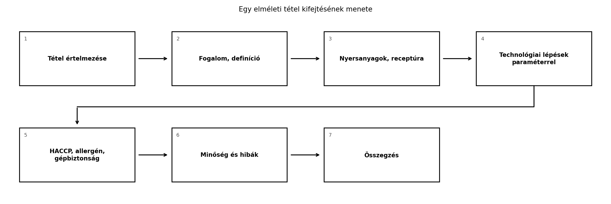

A szóbeli vagy elméleti vizsgarészen sok jól dolgozó pék tanuló bizonytalanodik el. A pékségben tudja, mikor érett a kovász, milyen a jól megkelt tészta, mikor kell kivenni a kenyeret – de amikor a vizsgáztató azt kéri, hogy „fejtse ki a búzakenyér közvetett eljárású előállítását”, összevissza kezd beszélni, kihagyja a HACCP-pontot, és nem mondja ki a paramétereket. A tudás megvan, csak nincs rendje.
Ez az alfejezet ezt a rendet adja. Megtanulsz egy állandó tételvázlat-sablont, amellyel bármelyik technológiai, higiéniai vagy minőségi tételt két-három perc alatt felvázolhatsz, és amely minden lépésnél összeköti a technológiát a higiéniával és a minőséggel – a könyv „higiénia–technológia–minőség hármasát”. A tételeket termékcsoportonként és témánként végignézzük, két tételt teljesen kidolgozunk, a többihez kulcspontlistát kapsz.
Egy jó felelet felépítése olyan, mint egy technológiai folyamat: van bemenete (a tétel kérdése), vannak lépései, ellenőrzési pontjai és van kimenete (az összegzés). A felelet felépítése:

A vázlat sorrendje nem merev, de minden pontnak szerepelnie kell. Ha egy elem kimarad, a vizsgáztató rákérdez – és ez a felelet leggyengébb pontja lesz.
Definíció. A tétel a vizsga egy előre meghatározott témaköre, amelyről a vizsgázó felkészülési idő után önállóan, összefüggően beszél, majd a kérdésekre válaszol. A tételek témáit és a felelet szabályait a vizsgaleírás rögzíti (ellenőrizendő: hatályos KKK/PTT és vizsgaleírás; a régi OKJ-s rendben szóbeli vizsgatevékenység volt, a mai szakmai vizsgán az elméleti tudás az írásbeli és a projektfeladat részeként is mérhető).
Definíció. A tételvázlat a felkészülési időben készített, kulcsszavakból és paraméterekből álló vázlat, amely a felelet sorrendjét rögzíti. Nem folyó szöveg.
Szabály. Minden technológiai tételben szerepeljen legalább egy kritikus pont (HACCP), az allergének és egy gépbiztonsági szabály. Minden paramétert úgy mondj, hogy tanulási példa, a pontos érték a technológiai laptól függ – ez szakmailag is helyes, és a vizsgáztató is ezt várja.
A sablon számozott ellenőrzőlista; a felkészülési idő elején írd fel a lap szélére, és pipáld ki:
Az alábbi táblázat a könyv technológiai lapjainak jellemző értékeit gyűjti össze. Minden szám tanulási példa (ellenőrizendő: üzemi technológiai lap).
| Termékcsoport | Mintatermék | Kulcsparaméterek | Kritikus pont | Hol tanultad |
|---|---|---|---|---|
| Kenyér | búzakenyér közvetett eljárással | kovász a liszt 20–30 %-a, 24–28 °C; kelesztés 30–38 °C, 70–80 % rel. pára; sütés 210–240 °C, gőz az elején | átsültség, maghőmérséklet legalább 96 °C (jellemzően 96–98 °C) | 31.2 |
| Péksütemény | vizes zsemle | tészta 26–28 °C; kelesztés kb. 32 °C, 75 %; sütés kb. 230 °C gőzzel, 12–14 perc | sütés, idegen anyag | 32.2 |
| Finom pékáru | foszlós kalács, leveles tészta | kalácstészta 24–26 °C, sütés 190–210 °C; leveles tészta hajtogatása 18–22 °C-on, kelesztés legfeljebb 24–26 °C | tojás hűtése, töltelék hűtése | 33.1, 33.4 |
| Egyéb termék | fánk, perec | fánk: zsiradék 170–180 °C; perec: 3–4 %-os nátrium-hidroxid-oldatos mártás | forró zsiradék, lúg (védőfelszerelés) | 34.1, 34.2 |
| Mézeskalács | mézes tészta | érlelés napokig; kémiai lazítás; sütés 160–200 °C | lazítószer adagolása, idegen anyag | 35.2, 37.1 |
Megjegyzés. A kenyérnél a gőzölés, a péksüteménynél a feladási tömeg és a gyors sütés, a finom pékárunál a zsiradék és a tojás kezelése, az egyéb termékeknél a hő- és vegyszerbiztonság, a mézeskalácsnál az érlelés és a lazítószer a tétel „szíve”. Ezt mondd ki a felelet elején.
Ezeknél a tételeknél a vizsgáztató azt nézi, hogy a szabályt a pékségi gyakorlatra tudod-e alkalmazni.
HACCP. Tételkifejtésnél használd ezt a kis táblázatot – a határértékek tanulási példák (ellenőrizendő: a pékség HACCP-terve, hatósági útmutató):
| Lépés | Veszély | Határ (példa) | Monitoring | Helyesbítés |
|---|---|---|---|---|
| Nyersanyag-átvétel | romlott, sérült áru, idegen anyag | sértetlen csomagolás, hűtött áru hőmérséklete a terv szerint | szemrevételezés, hőmérő | visszautasítás, reklamáció |
| Sütés | túlélő mikrobák (alulsütés) | maghőmérséklet ≥ 96 °C kenyérnél | maghőmérő, CCP-lap | visszatartás, visszavetés vagy selejt |
| Krém hűtése | mikrobaszaporodás | 2 órán belül 20 °C, további 4 órán belül 5 °C | hőmérő, időrögzítés | selejtezés, hűtési rend javítása |
| Allergén-elkülönítés | nem jelölt allergén | gyártási sorrend, tisztítás igazolva | ellenőrzőlista | visszatartás, átcímkézés |
Gépbiztonság. Gépes tételnél (dagasztó-, osztó-, gömbölyítő-, nyújtógép, kemence) mondd el: a gépet csak betanítás után, felügyelettel kezeled; üzem előtt ellenőrzöd a védőburkolatot, a reteszelést és a vészleállítót; tisztítás és beavatkozás csak leállított, áramtalanított, újraindítás ellen biztosított gépen, a forgó részek megállása után. Tilos a futó gépbe nyúlni és a reteszelést áthidalni (Dagasztógépek biztonságos üzemeltetése, gépápolás és folytonos tésztakészítés).
Minőségvizsgálati tételeknél a mérést mindig képlettel és példával mutasd:
Tételvázlat (ahogy a lapra írod):
Kifejtés (részlet): „A búzakenyér olyan kenyér, amelynek szerkezetét a búzaliszt sikérváza adja. Közvetett eljárásnál először a liszt egy részéből, tanulási példaként 25 %-ából kovászt készítünk… A sütés a kritikus szabályozási pont: a maghőmérsékletet maghőmérővel mérem, és a CCP-lapra írom. Ha nem éri el a határt, a tételt visszatartom.” A felelet így minden lépésnél összeköti a technológiát, a higiéniát és a minőséget. ∎
Tételvázlat:
A felelet végén mondd ki a kapcsolatot a minőséggel: az átsült kenyér bele rugalmas, nem ragad; ugyanaz a mérés az élelmiszer-biztonságot és a minőséget is igazolja. ∎
Egy tanuló a próbavizsgán a „Leveles tészta” tételt húzta. Hibátlanul elmondta a hajtogatás menetét és a rétegszámítást, de nem beszélt a zsiradék hőmérsékletéről, az allergénekről (vaj: tej) és a nyújtógépről. A vizsgáztató kérdésére azt mondta: „ezt mindenki tudja”. A pontszám közepes lett. A második próbán ugyanezt a tételt a kilencpontos sablonnal vázolta: a hajtogatás hőmérsékletét (18–22 °C, tanulási példa), a túl meleg kelesztés miatt kifolyó zsiradékot, a vaj tejallergénjét és a nyújtógép ujjvédőjét is megemlítette. Ugyanaz a tudás, rendezve, jóval több pontot ért. A tanulság: a vizsgán az számít, amit kimondasz.
A feleletet úgy értékeld, mint egy terméket. Jó felelet: logikus sorrend, pontos szakszavak, paraméterek mértékegységgel, legalább egy HACCP-pont, az allergének és egy gépbiztonsági szabály, két hiba okkal. Gyakori eltérés: csak a technológia hangzik el, a higiénia és a minőség kimarad; vagy a paraméter egység nélkül („harminc fokon, hatvan percig”, de mi?). A hatályos vizsgaleírás értékelési szempontjai a mérvadók (ellenőrizendő).
1. feladat (A) Írd fel a kilencpontos tételvázlat-sablont emlékezetből.
2. feladat (A) Sorold fel a vizes zsemle allergénjeit és két keresztszennyeződési forrást.
3. feladat (B) Készíts tételvázlatot a „Foszlós kalács előállítása” tételhez (a táblázat és a 33.1 alfejezet paramétereivel).
4. feladat (B) Egy kenyeret három szempontból pontoztak 1–10 skálán: külső 8, bélzet 7, íz-illat 9. A súlyok: 0,20; 0,40; 0,40. Számítsd ki a súlyozott pontszámot, és add meg 100 pontos skálán is.
5. feladat (C) A „Perec” tételnél a tanuló ezt mondta: „A perecet lúgba mártjuk, ezért kesztyű nem kell, mert gyorsan dolgozunk; a lúgot a lisztes polcon tartjuk, hogy kéznél legyen.” Keresd meg a hibákat, és mondd meg a helyes gyakorlatot.
6. feladat (D) Próbavizsgán 0,5 kg névleges tömegű kenyereket mértél: 489, 503, 512, 498, 494, 516 g. A tűrés tanulási példaként ±3 %. Számítsd ki az átlagot, a tűréshatárokat, döntsd el a megfelelést, és fogalmazd meg egy minőségvizsgálati tétel kifejtésének két mondatában.
Fogalom; nyersanyagok és receptúra; technológiai lépések paraméterrel; HACCP; allergén; gép- és munkabiztonság; minőség; hibák; összegzés.
Allergén: glutén (búzaliszt). Keresztszennyeződés: a szezámszóró munkahely (szezám – allergén) és a közös eszközök; a mák nem jogszabályi allergén, de érzékeny vevő kérésére önkéntes tájékoztatás adható; tejes termékek (pl. tejes kifli) a közös dagasztóban, ha a tisztítás elmarad.
Fogalom: tojással dúsított finom pékáru. Receptúra (példa, 33.1): liszt 100, tojáslé 30, vaj 25, cukor 15, víz 20, élesztő 6, só 1,2, tejpor 4. Lépések: dagasztás, a vaj a második felében; tészta 24–26 °C; érlelés 30–40 perc; osztás (550 g 500 g-os késztömeghez); fonás; kelesztés 28–32 °C, 70–80 %, 60–90 perc; tojásos kenés; sütés 190–210 °C, 30–40 perc; hűtés rácson. HACCP: tojás hűtött tárolása, kenőtojás elkülönítése, sütés. Allergén: glutén, tojás, tej (margarinnál szója is lehet). Gép: dagasztógép-szemle. Minőség: foszló bél, fényes, aranybarna héj. Hibák: túlkelés → fonat szétesik; túl meleg sütő → sötét héj, nyers bél.
pont a 10-ből, ami 100 pontos skálán 80 pont; a 39.1 tanulási példa kategóriái szerint „jó”.
Hibák: a lúg (nátrium-hidroxid-oldat) maró hatású, ezért védőkesztyű és védőszemüveg kötelező, a gyorsaság nem védelem; a vegyszert élelmiszertől elkülönítve, felcímkézett edényben kell tárolni a biztonsági adatlap szerint. Helyesen: védőfelszerelés, elkülönített tárolás, a gyártói utasítás betartása (34.1).
Átlag: . Tűréshatár: , . Az átlag megfelel; az 516 g-os darab a felső határ fölött van (a fogyasztó nem károsodik, de a feladás szórása nagy). Kifejtés: „A tömegellenőrzésnél a mintadarabok átlagát és az egyes darabokat is a névleges tömegre vetített tűréshez hasonlítom. Itt az átlag 502 g, megfelel, de egy darab 516 g, ezért az osztást és a feladási tömeget ellenőrizni kell.”
Az elméleti tételek kifejtése a kilencpontos tételvázlat-sablonra épül: fogalom, nyersanyagok és receptúra, technológiai lépések paraméterrel, HACCP, allergén, gép- és munkabiztonság, minőség, hibák, összegzés. Továbbvitt eredmény: minden technológiai lépéshez kapcsolj HACCP-pontot és minőségi jellemzőt – a sütés CCP (kenyérbél maghőmérséklete legalább 96 °C, tanulási érték; jellemző mért érték 96–98 °C, ellenőrizendő), a krém hűtése, a tojás és az allergén-elkülönítés kritikus pont; ezt a hármas szemléletet a Gyakorlati vizsgafeladat: termékkészítés a technológiai laptól a minősítésig alfejezet munkatervében és értékelésében alkalmazod. A paramétereket mindig tanulási példaként, mértékegységgel mondd; a gépbiztonságnál a szemle, az áramtalanítás és a tilos gyakorlatok kimondása kötelező. A minőségvizsgálati tételeknél képletet és számpéldát adj (fajlagos térfogat, súlyozott pontszám, tömegtűrés).